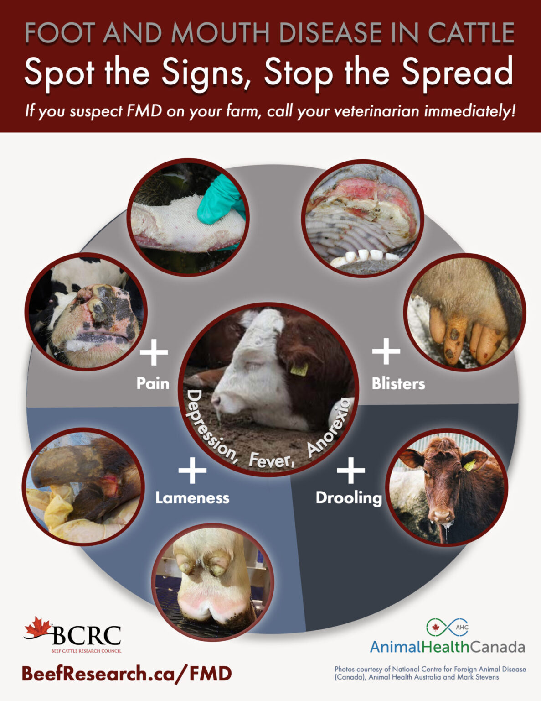
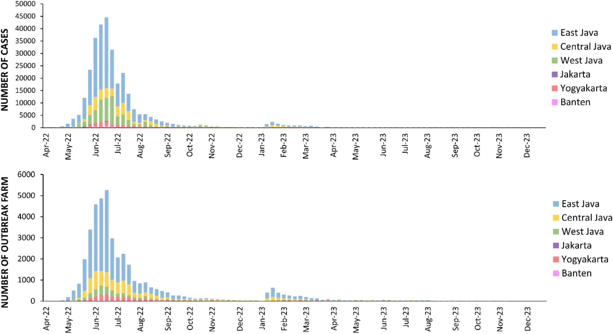
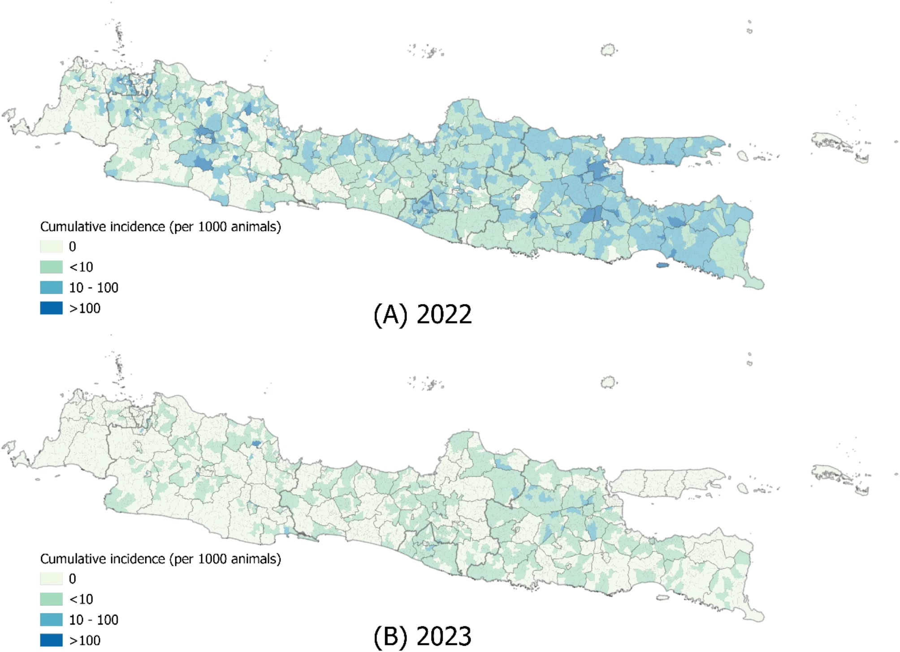
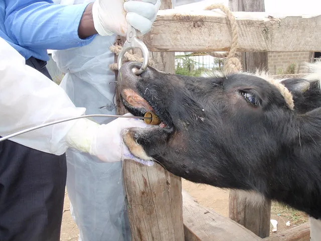

Foot-and-mouth disease (FMD) is a severe, highly contagious viral disease of livestock. It has a large economic impact. It disrupts livestock production and regional and international trade, so it is a transboundary animal disease. The cause is an Aphthovirus in the family Picornaviridae.
Source: WOAH, Foot and mouth disease.
Disease occurs when a susceptible host, a virus and an environment that lets it move all meet. Click each corner.
Laboratory diagnosis of any suspected FMD case is a matter of urgency. The WOAH Terrestrial Manual gives these reasons.
Best sample. Epithelium from an unruptured or freshly ruptured vesicle, or vesicular fluid. If none is available, use throat (oesophageal–pharyngeal) fluid from a probang cup in ruminants, a throat swab in pigs, or blood. Source: WOAH Terrestrial Manual, chapter 2.1.5.
Each test answers a different question. Read across each row: what the test looks for, whether it detects virus or antibody, and whether it can tell serotypes or strains apart. SP = structural proteins (virus shell). NSP = non-structural proteins.
| Test | What it tests | What it detects | Can it differentiate serotype or strain? |
|---|---|---|---|
| Tests that detect the virus (sample: epithelium, vesicular fluid, throat fluid, sometimes serum) | |||
| Virus isolation Cell culture or unweaned mice | Grows live virus from epithelium, vesicular fluid, throat (OP) fluid or serum. Takes up to 4 days. | Live virus | Not by itself The isolate is then typed by ELISA, CFT or RT-PCR. |
| Antigen ELISA Sandwich ELISA | Viral antigen in epithelial suspension, vesicular fluid or cell culture fluid. Not sensitive enough for throat fluid or serum. | Antigen | Serotype Capture antisera for each of the 7 serotypes. It does not separate strains. |
| Antigen lateral flow device Pen-side strip | Viral antigen in epithelial suspension, at the farm. The 2012 Manual notes that no validation dossier had reached the OIE. | Antigen | No Current strips detect virus only. Strips that give the serotype are under development. |
| Complement fixation test Older test, mostly replaced by ELISA | Viral antigen in epithelial suspension. Less sensitive than ELISA. | Antigen | Serotype Typing with antisera, also used for subtyping. |
| RT-PCR Conventional, gel-based | Viral RNA in epithelium, milk, serum and throat fluid. | Viral RNA | Partly Serotype-specific primers exist, but no single primer set types every virus. |
| Real-time RT-PCR TaqMan, 5′UTR or 3D target | Viral RNA in epithelium, throat fluid, serum and other samples. Fast, and as effective as virus isolation plus antigen ELISA for first detection. | Viral RNA | No Detects all serotypes but is not designed to type them. Some serotype bias, and a few isolates are missed. |
| RT-LAMP Isothermal, water bath, result by eye | Viral RNA in under an hour with simple equipment. Not yet extensively evaluated to replace current methods. | Viral RNA | No A detection assay, not a typing test. |
| RT-PCR with sequencing VP1 gene or whole genome | Reads the genome sequence of the virus. | Viral RNA | Serotype and strain Gives serotype, lineage and strain. Used to trace the origin and spread of outbreaks. |
| Tests that detect antibody (sample: serum) | |||
| Virus neutralisation test (VNT) Needs cell culture and live virus | Neutralising antibody to the virus shell. Takes 2–3 days. Prescribed for trade. | Antibody to SP | Serotype Serotype-specific, and works best when the test virus matches the field strain. It cannot tell vaccinated from infected animals. |
| SPCE and LPBE ELISA Solid-phase competition and liquid-phase blocking | Antibody to the virus shell. Faster than VNT and needs no live virus. Prescribed for trade. | Antibody to SP | Serotype Serotype-specific, and sensitive only if the antigen closely matches the field strain. It cannot tell vaccinated from infected animals. |
| NSP antibody tests 3ABC ELISA, strip, EITB | Antibody to non-structural proteins, which are made only when the virus replicates. Shows past or present infection, with or without vaccination (DIVA). | Antibody to NSP | No NSPs are conserved, so the test is not serotype-specific. It detects infection with any of the 7 serotypes. |
Sources. WOAH Terrestrial Manual, chapter 2.1.5, Foot and mouth disease (PDF) and Jamal and Belsham (2013), Foot-and-mouth disease: past, present and future. Vet Res 44:116.
DIVA means differentiating infected from vaccinated animals. Both kinds of animal can have neutralising antibody in their serum, so a plain antibody test cannot tell them apart. For trade, we need to know which animals were infected and which were only vaccinated.
| SP antibody test | NSP antibody test | |
|---|---|---|
| Targets | Capsid proteins (VNT, SPCE, LPBE) | Non-structural proteins (3ABC ELISA, strip, EITB) |
| Vaccinated only | Positive | Negative |
| Infected | Positive | Positive |
| Serotype-specific | Yes | No, NSPs are conserved |
| Main use | Vaccine response and trade certification | Detecting infection in vaccinated or unvaccinated herds |
A herd with a mixed history. Read the SP and NSP results for each cow, then decide: neither vaccinated nor infected, vaccinated only, or infected. Press Check my answers to see the answers and reasons. Teaching values: both tests are treated as reliable except where the limits above apply.
Indonesia was free from FMD for decades. The last case was in December 1983, vaccination stopped after 1985, and WOAH recognised the country as free without vaccination in 1990. On 10 April 2022 the first outbreak was reported in Gresik, East Java. By the end of April, cattle farms in Sidoarjo and Lamongan were also affected. In May, outbreaks with FMD-like signs were reported across Java, Sumatra, Kalimantan and West Nusa Tenggara. Cases peaked in June 2022, fell through the year, and rose slightly again in early 2023. The virus was FMDV serotype O, lineage O/ME-SA/Ind-2001e.


Figures from Kedang et al. (2025), Figs. 1 and 3, BMC Veterinary Research 21:180, reproduced unchanged under CC BY-NC-ND 4.0.
A farm in your district reports 40 cattle and a few goats with fever, drooling, lameness and vesicles.

Prepare a presentation that answers Exercises 0.1 and 0.2. Suggested slides:
Sources. Kedang VMK, Permatasari I, Chanchaidechachai T, Inchaisri C (2025), Spatial-temporal distribution and risk factors of foot and mouth disease outbreaks in Java Island, Indonesia from 2022 to 2023, BMC Veterinary Research 21:180: PubMed and Springer. Susila EB et al. (2023), Detection and identification of foot-and-mouth disease O/ME-SA/Ind-2001 virus lineage, Indonesia, 2022, Journal of Applied Animal Research 51:487–494. Sample handling and test notes also draw on the WOAH Terrestrial Manual chapter 2.1.5 and Jamal and Belsham (2013), cited above.